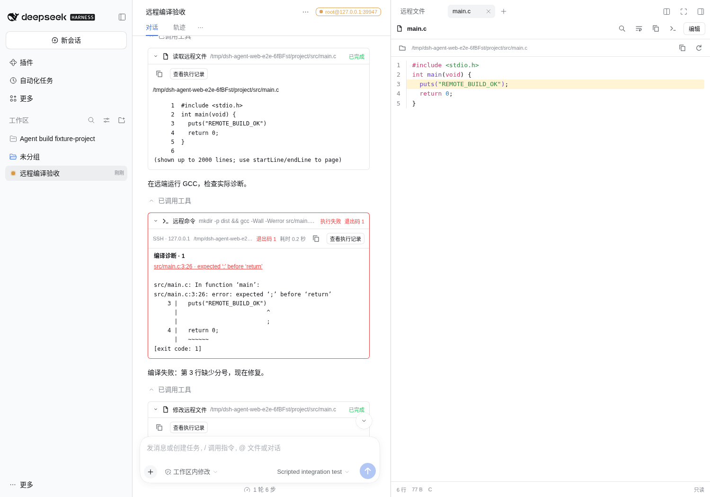
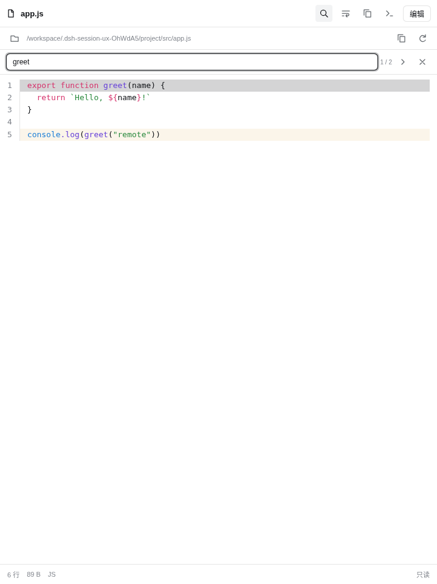
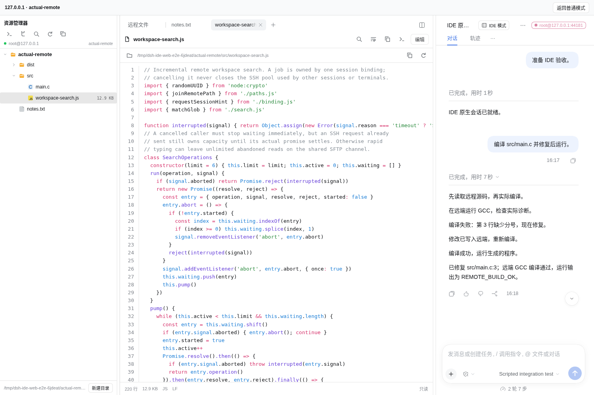
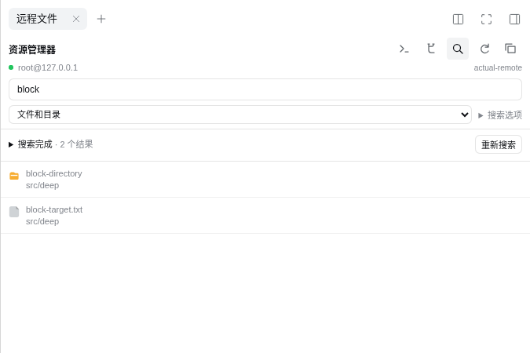
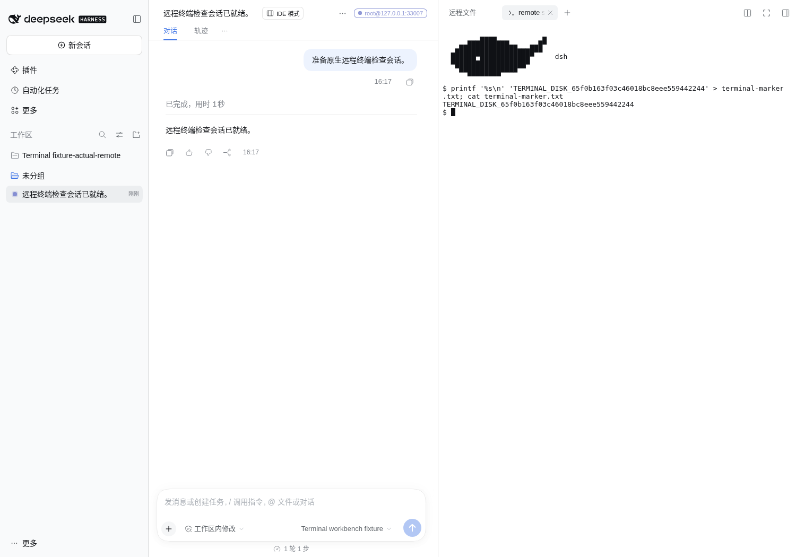
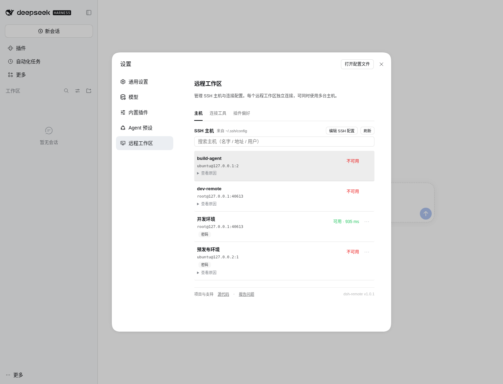
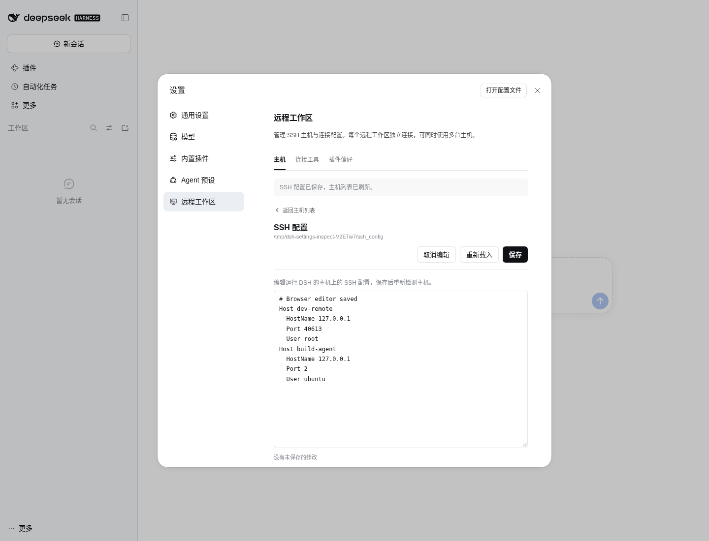

01 / PROJECTS
直接回到项目
搜索跨主机最近项目，发现 SSH 配置中的主机，通过键盘浏览和选择目录。
连接 SSH 主机，打开项目，浏览文件与使用终端。从编译错误到修复结果，在同一个 DSH 工作区里看清每一步。

实际退出码、编译诊断与远程文件行定位，让执行结果可追溯。

查找、换行、Markdown 预览和编辑快捷键，保留阅读与目录上下文。

可切换三栏：左侧远程文件、中间原生编辑器、右侧真实会话。

递归搜索文件、目录或内容。进度和操作保持紧凑，详细选项按需展开。

明确打开 remote ssh，终端跟随会话的远程项目目录。
连接、文件、终端与 Agent 操作围绕当前会话展开，减少来回寻找主机和目录。
搜索跨主机最近项目，发现 SSH 配置中的主机，通过键盘浏览和选择目录。
文件栏直接读取远端，递归搜索文件、目录和内容；进度可见，结果可定位到行。
保留真实退出状态和编译诊断，查看已应用的上下文差异，再跳转到实际远端文件。
从文件栏打开原生 remote ssh，保留宿主的终端输入、缩放和滚动能力。
左侧远程文件树，中间原生编辑器标签，右侧真实会话；调整列宽，保留任务和未保存输入。
分开查看工作区和暂存区差异，筛选改动并跳转到文件行；只读查看，不自动提交。
在新建工作区时选择 SSH 主机。设置页仅管理连接配置与自动连通性检测。
从最近项目进入，或选择远程目录创建工作区；每个工作区独立绑定主机，可并行工作。
让 Agent 通过 rw_* 读写、构建和测试，也可直接使用文件栏和终端。
查看输出和退出码，定位诊断，再检查实际文件改动。
打开设置自动检测 SSH 连通性与耗时，失败原因按需展开。目录只在新建工作区时选择，多个主机项目可同时工作。SSH 配置可直接在页面编辑保存，自动更新显示进度和失败原因。


一次清楚的复现、一个工作流建议，或一份小而完整的修复，都能帮助项目变得更可靠。欢迎中文和英文交流。